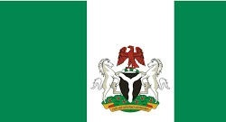

Section 1 Heading
My name is Ngwuta Ogechi Enrica. I am from Ebonyi State in Nigeria. I am 25 years old. Currently, I am working as a professional hair stylist at Magic Fade Salon. I love playing the piano.

This is some content for the first section. Here are some useful links:
Section 2 Heading

Nigeria is located in the western part of Africa. It's known as the giant of Africa due to its large population and other features. It has the highest population in Africa, the longest bridge in Africa, and numerous raw materials , we are also good in farming.
This is some content for the second section. Here are some useful links: